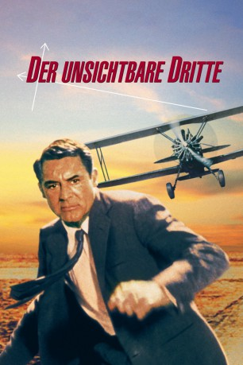
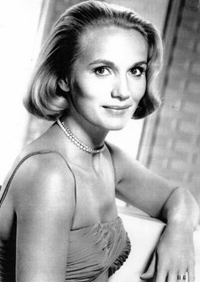
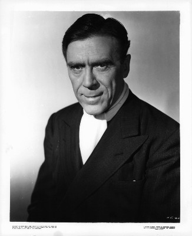
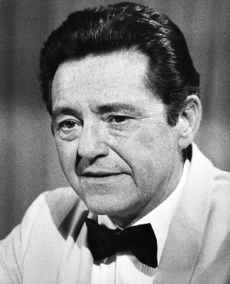
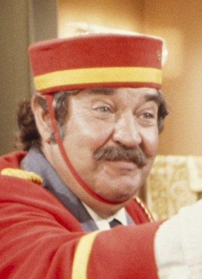
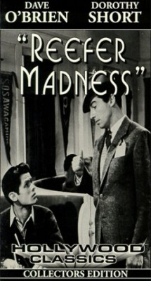
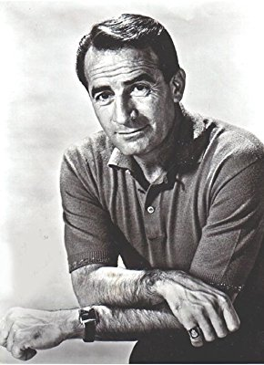
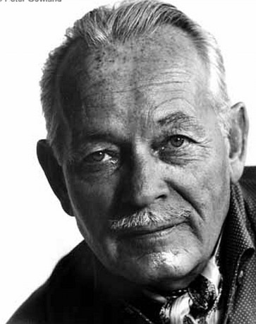
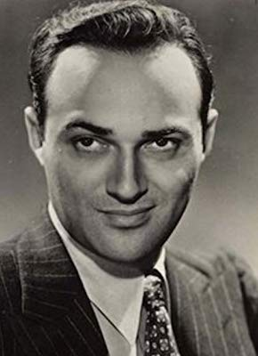

#1630 Der Hitchcock - Unsichtbare Dritte
Alternativ: North by Northwest
Auszeichnungen: für 3 Oscars nominiert
 
 IMDB-Wertung: 8.3 / 10
IMDB-Wertung: 8.3 / 10  IMDB-TOP-Platzierung: 77
IMDB-TOP-Platzierung: 77  Metascore: 98
Metascore: 98 
Roger O. Thornhill, ein einfacher Werbefachmann, will nur eine Geschäftsbesprechung führen, als ihn zwei Männer mit einer Waffe bedrohen und ihn auf einem Landsitz entführen. Dort wird er von Philipp Vandamm zu Rede gestellt, der ihn fälschlicherweise für einen gewissen George Kaplan hält. Thornhill beteuert seine Unschuld, kann dann aber nur knapp einem Mordanschlag entgehen, weil er die geforderten Informationen nicht preisgeben konnte. Von der Polizei aufgegriffen, glauben diese ihm kein Wort seiner verrückten Geschichte. Doch Thornhill lässt sich nicht beirren und macht sich auf die Suche nach dem echten George Kaplan...
Jahr: 1959
Dauer: 136 Minuten
FSK: 12
Land: USA Studio: MGMTonspuren: DD1.0 - ,
Untertitel:
Auflösung: 1080p (1920x1080) Größe: 7946 MB
Genre: Thriller, Abenteuer, Mystery
Regisseur:  Alfred Hitchcock
Alfred Hitchcock
Drehbuch: Ernest Lehman
Soundtrack: Bernard Herrmann
Darsteller:
 Cary Grant als Roger O. Thornhill
Cary Grant als Roger O. Thornhill-  Eva Marie Saint als Eve Kendall
 James Mason als Phillip Vandamm
James Mason als Phillip Vandamm- Jessie Royce Landis als Clara Thornhill
-  Leo G. Carroll als The Professor
- Philip Ober als Lester Townsend
 Martin Landau als Leonard
Martin Landau als Leonard- Adam Williams als Valerian
 Edward Platt als Victor Larrabee
Edward Platt als Victor Larrabee- Robert Ellenstein als Licht
- Les Tremayne als Auctioneer
-  Edward Binns als Captain Junket
- Ken Lynch als Charley - Chicago Policeman
-  Stanley Adams als Lieutenant Harding , uncredited
 Malcolm Atterbury als Man at Prairie Crossing , uncredited
Malcolm Atterbury als Man at Prairie Crossing , uncredited Ned Glass als Ticket Seller , uncredited
Ned Glass als Ticket Seller , uncredited Alfred Hitchcock als Man Who Misses Bus , uncredited
Alfred Hitchcock als Man Who Misses Bus , uncredited- Robert Shayne als Larry Wade , uncredited
 Frank Wilcox als Herman Weitner , uncredited
Frank Wilcox als Herman Weitner , uncredited- Lloyd Williams als Minor Role , uncredited
-  Carleton Young als Fanning Nelson , uncredited
- Josephine Hutchinson als Mrs. Townsend
- Philip Coolidge als Dr. Cross
- Patrick McVey als Sergeant Flamm
- Andy Albin als Farmer , uncredited
- Anne Anderson als Woman , uncredited
 Don Anderson als Worker , uncredited
Don Anderson als Worker , uncredited- Ernest Anderson als Porter on Twentieth Century Ltd. , uncredited
- Tol Avery als State Police Detective , uncredited
- Sam Bagley als Courtroom Spectator , uncredited
- Frank Baker als Man at Auction , uncredited
- Baynes Barron als Taxi Driver #2 , uncredited
- Brandon Beach als Man at Auction , uncredited
-  John Beradino als Sergeant Emile Klinger , uncredited
- Stephen Bolster als Man with Camera , uncredited
-  Steve Carruthers als Man at Auction , uncredited
- Taggart Casey als Shaving Man , uncredited
- Bill Catching als Auction Attendant , uncredited
- Bob Coe als Cropduster Pilot , uncredited
- David A. Cox als Police Officer on Horse , uncredited
 Walter Coy als U.S. Intelligence Agency Official , uncredited
Walter Coy als U.S. Intelligence Agency Official , uncredited- Jimmy Cross als Taxi Driver #1 , uncredited
- Lucille Curtis als Woman , uncredited
- Patricia Cutts als Hospital Patient , uncredited
- Jack Daly als Train Steward , uncredited
- John Damler als Police Lieutenant , uncredited
-  Lawrence Dobkin als U.S. Intelligence Agency Official , uncredited
 Alphonso DuBois als Man at United Nations Building , uncredited
Alphonso DuBois als Man at United Nations Building , uncredited- Tommy Farrell als Eddie - Elevator Starter , uncredited
- Jesslyn Fax als Minor Role , uncredited
Datei: X:\Person\Hitchcock\Hitchcock - Unsichtbare Dritte, Der (1959, FSK12, 1920x1080).mkv seit 28.07.2015
Festplatte: HD Collection-7+mehr(A-Z)+Person
 Es gibt insgesamt 25 Filme in der Gruppe 'Person\Hitchcock'
Es gibt insgesamt 25 Filme in der Gruppe 'Person\Hitchcock'